Master canvas geometry, automated layout engines (tight_layout, constrained_layout), manual margin tuning (subplots_adjust), padding parameters (pad, wspace, hspace), outside legend anchoring, and zero-crop export workflows.
Aksar beginners sochte hain ki agar unhone data sahi calculate kar liya aur plot() ya bar() command chala di, toh graph ready hai! Lekin real world mein layout and spacing hi decide karte hain ki aapka dashboard ek professional executive report lagega ya ek unreadable mess.
Jab aap ek hi Figure ke andar multiple subplots add karte hain, toh default settings mein axes ke titles, X-axis labels, aur Y-axis tick marks aapas mein takraane lagte hain (collision). Data points kitne bhi accurate hon, reader text padh hi nahi pata!
figsize) aur furniture ke beech ka gap (wspace, hspace) dono balanced hone chahiye!
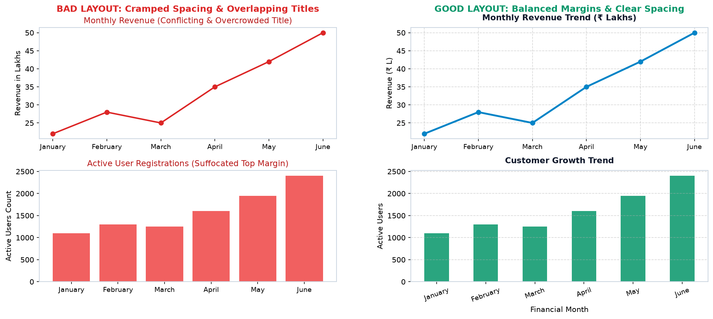
Dekhiye bina spacing adjust kiye multi-chart figure kaise labels collide karta hai:
import matplotlib.pyplot as plt
# Default figure creation without layout tuning
fig, (ax1, ax2) = plt.subplots(2, 1, figsize=(6, 4))
ax1.plot(['Jan', 'Feb', 'Mar', 'Apr'], [20, 35, 30, 45], color='red')
ax1.set_title("First Subplot Title - Default Crowding")
ax1.set_xlabel("Financial Months")
ax2.bar(['Jan', 'Feb', 'Mar', 'Apr'], [100, 150, 130, 190], color='crimson')
ax2.set_title("Second Subplot Title - Crashes into ax1's X-axis!")
ax2.set_xlabel("Financial Months")
# Notice: ax2's title collides with ax1's X-axis label!
plt.show()Sirf ek command fig.tight_layout() se Matplotlib automated padding calculate karke collision hatata hai:
import matplotlib.pyplot as plt
fig, (ax1, ax2) = plt.subplots(2, 1, figsize=(7, 5))
ax1.plot(['Jan', 'Feb', 'Mar', 'Apr'], [20, 35, 30, 45], color='#0284c7', lw=2)
ax1.set_title("First Subplot Title - Clean & Separated", fontweight='bold')
ax1.set_ylabel("Metric Alpha")
ax1.grid(True, linestyle='--', alpha=0.4)
ax2.bar(['Jan', 'Feb', 'Mar', 'Apr'], [100, 150, 130, 190], color='#059669', width=0.5)
ax2.set_title("Second Subplot Title - Zero Collision", fontweight='bold')
ax2.set_ylabel("Metric Beta")
ax2.set_xlabel("Financial Months")
ax2.grid(True, linestyle='--', alpha=0.4, axis='y')
# Automatic spacing engine calculates necessary padding
fig.tight_layout(pad=2.0)
plt.show()Matplotlib mein figsize=(width, height) ka measurement inches mein hota hai, pixels mein nahi! Aur dpi (Dots Per Inch) ye batata hai ki 1 inch mein kitne pixels render honge.
Pixels Width = figsize_width × dpiPixels Height = figsize_height × dpifigsize=(10, 6) hai aur aap dpi=150 par save karte hain, toh image ka actual pixel resolution 1500 × 900 pixels hoga!
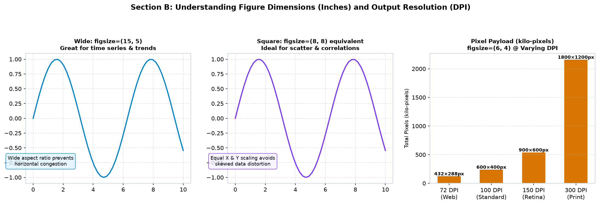
import matplotlib.pyplot as plt
# 10 inches wide by 5 inches tall at 150 DPI
fig, ax = plt.subplots(figsize=(10, 5), dpi=150)
ax.plot([1, 2, 3, 4], [10, 20, 25, 30], color='#0284c7', lw=2)
ax.set_title("Verifying Canvas Pixels Calculation")
# Calculate expected pixels
w_inches, h_inches = fig.get_size_inches()
dpi = fig.dpi
print(f"Figure Size: {w_inches} x {h_inches} inches")
print(f"Canvas DPI: {dpi}")
print(f"Calculated Output Pixels: {int(w_inches * dpi)} x {int(h_inches * dpi)} px")
fig.tight_layout()
fig.savefig("assets/test_resolution.png", dpi=150)
plt.close(fig)fig.tight_layout() Matplotlib ka sabse popular automatic spacing helper hai. Ye Figure ke internal components (axis labels, tick marks, titles) ko scan karta hai aur subplots ke beech ka gap automatically badha deta hai taki koi cheez kate na.
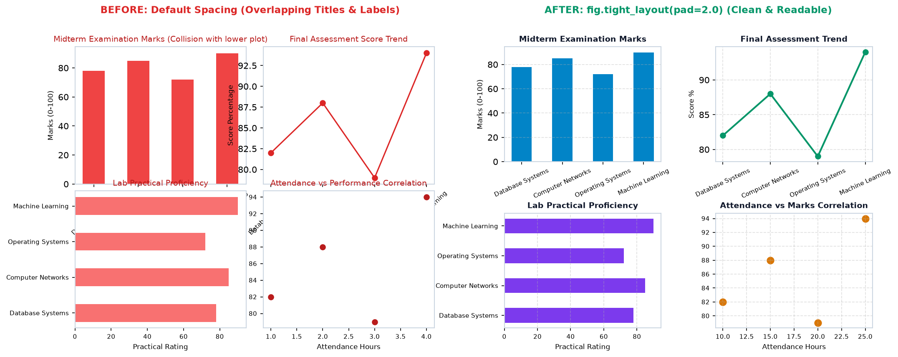
pad=...: Figure border aur subplots ke beech ka overall padding (default is ~1.08). pad=1.5 ya 2.0 mobile dashboards ke liye recommended hai.w_pad=...: Do bagal-bagal wale subplots ke beech ka extra horizontal gap.h_pad=...: Oopar-neeche wale subplots ke beech ka extra vertical gap.rect=[left, bottom, right, top]: Crucial Parameter! Ye tight_layout ko batata hai ki Figure ke kis box ke andar subplots ko fit karna hai.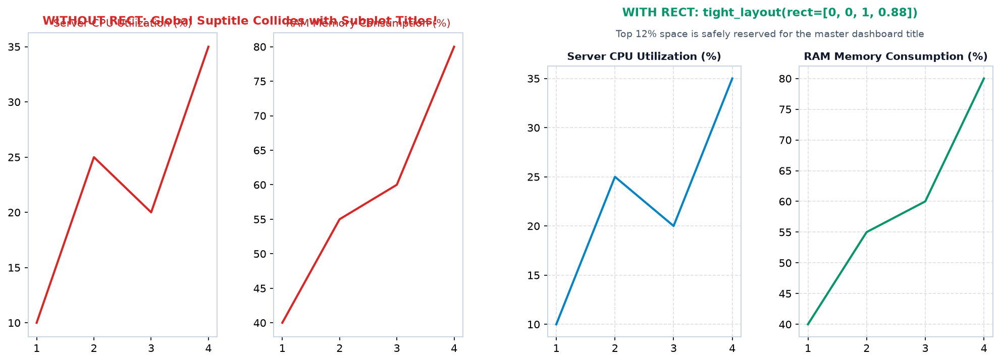
fig.suptitle("Master Title") lagate hain aur uske baad seedha fig.tight_layout() call karte hain, toh Matplotlib ka tight_layout suptitle ko ignore kar deta hai aur top subplot ke titles suptitle ke upar chadh jate hain!fig.tight_layout(rect=[0, 0, 1, 0.93]). Ye top 7% area ko suptitle ke liye chhod kar baki 93% area mein subplots fit karta hai.
import matplotlib.pyplot as plt
fig, axes = plt.subplots(1, 2, figsize=(10, 4))
axes[0].plot([1, 2, 3], [10, 20, 15], color='#0284c7')
axes[0].set_title("CPU Utilization (%)")
axes[1].plot([1, 2, 3], [40, 50, 45], color='#059669')
axes[1].set_title("Memory Utilization (%)")
# Add a prominent master dashboard title
fig.suptitle("Executive Cloud Server Telemetry 2026", fontsize=14, fontweight='bold', y=0.98)
# Reserve top 8% of the canvas for the suptitle
fig.tight_layout(pad=1.5, rect=[0, 0, 1, 0.92])
plt.show()Matplotlib version 3.0+ mein ek naya aur modern layout engine introduce kiya gaya: Constrained Layout. Jabki tight_layout() plot banne ke baad end mein post-processing karta hai, constrained_layout=True drawing pipeline ke dauran hi dynamically sabhi decorations (titles, tick labels, colorbars, legends) ko track karke real-time optimize karta hai.
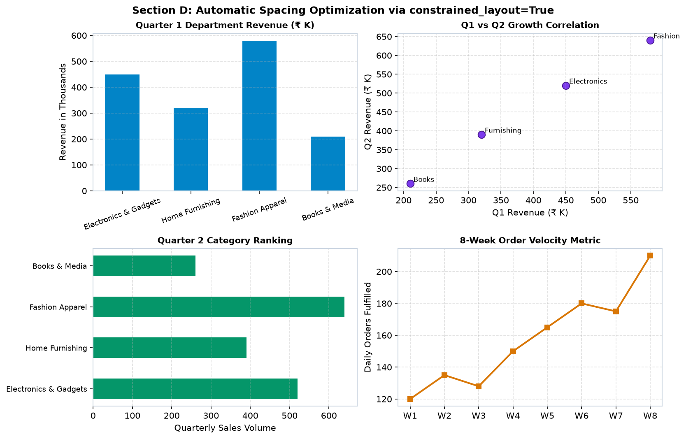
constrained_layout=True aur fig.tight_layout() dono ek sath mat lagao! Dono alag-alag algorithms hain; dono ko ek sath chalane par Matplotlib warning emit karega aur layout break ho sakta hai.
| Feature | tight_layout() | constrained_layout=True |
|---|---|---|
| How it is called | Function call at the end: fig.tight_layout() |
Flag at creation: plt.subplots(..., constrained_layout=True) |
| Suptitle handling | Requires manual rect=[0, 0, 1, 0.92] |
Automatically allocates room for fig.suptitle()! |
| Colorbars & Legends | Can sometimes misalign with complex colorbars | Native awareness of colorbars and figure-level elements |
| Nested Grids | Limited nested support | Excellent hierarchical layout propagation |
import matplotlib.pyplot as plt
# Enabled directly in the constructor
fig, axes = plt.subplots(2, 2, figsize=(11, 7), constrained_layout=True)
categories = ['Electronics', 'Furnishing', 'Apparel', 'Books']
sales_q1 = [450, 320, 580, 210]
axes[0, 0].bar(categories, sales_q1, color='#0284c7')
axes[0, 0].set_title("Q1 Department Revenue")
axes[0, 0].tick_params(axis='x', rotation=20)
axes[0, 1].scatter([1, 2, 3, 4], sales_q1, color='#7c3aed', s=60)
axes[0, 1].set_title("Revenue Correlation")
axes[1, 0].barh(categories, sales_q1, color='#059669')
axes[1, 0].set_title("Category Ranking")
axes[1, 1].plot(categories, sales_q1, marker='o', color='#d97706')
axes[1, 1].set_title("Quarterly Growth Velocity")
# Master title is automatically accommodated without rect!
fig.suptitle("Retail Operations Executive Overview 2026", fontsize=14, fontweight='bold')
plt.show()Agar automatic engines aapko exact desired margins nahi de rahe hain, ya aapko external legends aur sidebar annotations ke liye custom space reserve karna hai, toh fig.subplots_adjust() aapka ultimate weapon hai!
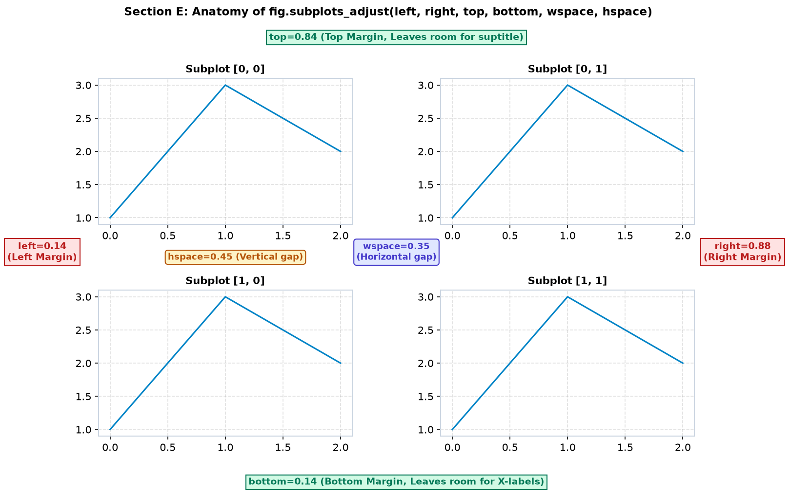
left (Default ~0.125): Canvas ke left edge se subplots ka shuruat point (0.0 = extreme left). Agar Y-axis labels lambe hain, toh left=0.15 kar dein.right (Default ~0.9): Canvas ke left edge se rightmost subplot boundary. Agar right side mein bahar legend rakhna hai, toh right=0.78 kar dein.bottom (Default ~0.11): Canvas ke bottom edge se shuruat point. X-axis tick labels lambe ya rotated hon toh bottom=0.18 kar dein.top (Default ~0.88): Canvas ke bottom edge se topmost subplot boundary. fig.suptitle() ke liye jagah chhodne ke liye top=0.85 kar dein.wspace (Default ~0.2): Adjacent columns ke beech ka horizontal gap (normalized to average axes width).hspace (Default ~0.2): Adjacent rows ke beech ka vertical gap (normalized to average axes height).import matplotlib.pyplot as plt
fig, axes = plt.subplots(2, 2, figsize=(10, 6))
# Fine-tune exact figure margins and internal gaps
fig.subplots_adjust(left=0.12, right=0.92, top=0.86, bottom=0.12, wspace=0.35, hspace=0.45)
for ax in axes.flatten():
ax.plot([1, 2, 3], [10, 25, 20], color='#0284c7')
ax.grid(True, linestyle='--', alpha=0.4)
axes[0, 0].set_title("Panel A: Regional Sales", fontweight='bold')
axes[0, 1].set_title("Panel B: Customer Churn", fontweight='bold')
axes[1, 0].set_title("Panel C: Inventory Turnover", fontweight='bold')
axes[1, 1].set_title("Panel D: Logistics Delay", fontweight='bold')
fig.suptitle("Supply Chain Operations Matrix", fontsize=14, fontweight='bold', y=0.96)
plt.show()Beginners aksar pad, wspace, aur hspace ke beech confuse ho jaate hain. Samajhna zaroori hai ki inka role alag-alag scope mein hota hai:
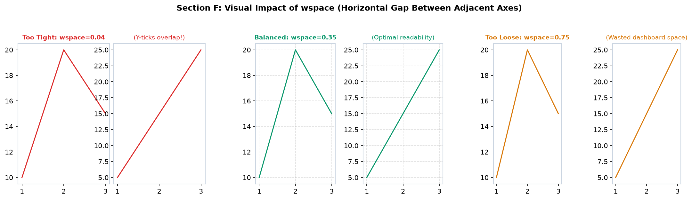
pad (in tight_layout): Figure boundary aur subplots ke outer bounding box ke beech ka padding factor hai.wspace & hspace: Do padosi axes ke beech ka normalized distance hai. Inka calculation relative to axes size hota hai (0.3 matlab 30% of average axes width/height).
import matplotlib.pyplot as plt
fig, (ax1, ax2) = plt.subplots(1, 2, figsize=(10, 4))
ax1.plot([1, 2, 3], [100, 250, 180], color='#0284c7', lw=2)
ax1.set_title("Store 1 Revenue (₹ K)")
ax1.set_ylabel("Monthly Gross")
ax2.plot([1, 2, 3], [120, 210, 230], color='#059669', lw=2)
ax2.set_title("Store 2 Revenue (₹ K)")
ax2.set_ylabel("Monthly Gross")
# Perfect balance: 35% horizontal gap prevents Y-axis collision
fig.subplots_adjust(wspace=0.35, top=0.85, bottom=0.15)
fig.suptitle("Comparative Store Performance", fontsize=13, fontweight='bold')
plt.show()Jab category names lambe hote hain (jaise "Electronics & Communication Engineering" ya "November 2026 Quarter"), toh standard horizontal text ek doosre ke upar chadh jata hai.
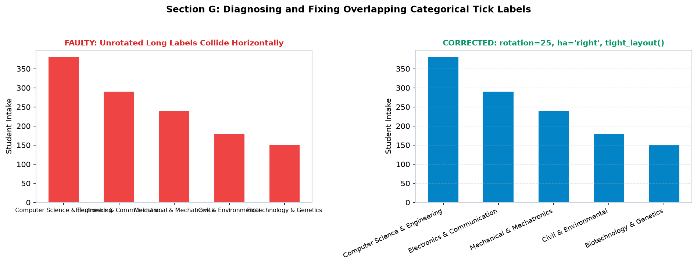
ax.tick_params(axis='x', rotation=25) ya plt.xticks(rotation=30) lagayein.for tick in ax.get_xticklabels():
tick.set_ha('right')fig.subplots_adjust(bottom=0.20) ya fig.tight_layout(pad=2.0) zaroor dein.ax.barh() use karein!import matplotlib.pyplot as plt
fig, ax = plt.subplots(figsize=(8, 4.5))
depts = ['Computer Science & Engg', 'Electronics & Comm', 'Mechanical & Mechatronics', 'Civil & Environmental']
intake = [380, 290, 220, 160]
ax.bar(depts, intake, color='#0284c7', width=0.5)
ax.set_title("Engineering College Intake 2026", fontweight='bold')
ax.set_ylabel("Students Admitted")
ax.grid(True, linestyle='--', alpha=0.4, axis='y')
# Rotate labels and right-align them cleanly
ax.tick_params(axis='x', rotation=25, labelsize=9)
for tick in ax.get_xticklabels():
tick.set_ha('right')
fig.tight_layout(pad=2.0)
plt.show()Grid geometry ke hisab se figure ka aspect ratio choose karna padta hai:
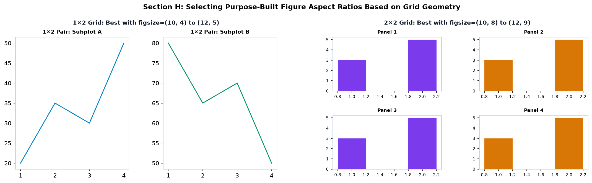
| Grid Shape | Recommended figsize | Key Spacing Considerations |
|---|---|---|
| 1 × 2 (Side-by-Side) | (10, 4) to (12, 5) |
Ensure sufficient wspace (0.30+) so right plot's Y-label doesn't touch left plot. |
| 2 × 1 (Stacked Vertical) | (7, 8) to (8, 9) |
Ensure sufficient hspace (0.35+) so bottom plot's title doesn't hit top plot's X-label. |
| 2 × 2 (Balanced Quad) | (10, 8) to (12, 9) |
Balanced wspace=0.35 and hspace=0.40 with constrained_layout=True. |
| 3 × 1 (Triple Stack) | (8, 11) to (9, 12) |
Consider sharing X-axis (sharex=True) to avoid repeating horizontal time axes! |
import matplotlib.pyplot as plt
import numpy as np
time_hrs = np.linspace(0, 24, 100)
temp = 20 + 8 * np.sin(np.pi * time_hrs / 12)
pressure = 1013 - 10 * np.cos(np.pi * time_hrs / 12)
wind = 15 + 5 * np.sin(np.pi * time_hrs / 6)
# Tall aspect ratio with shared horizontal scale
fig, axes = plt.subplots(3, 1, figsize=(8, 9), sharex=True, constrained_layout=True)
axes[0].plot(time_hrs, temp, color='#dc2626', lw=2)
axes[0].set_ylabel("Temp (°C)")
axes[0].set_title("Chamber Environmental Telemetry (24-Hour Cycle)", fontweight='bold')
axes[0].grid(True, linestyle='--', alpha=0.4)
axes[1].plot(time_hrs, pressure, color='#0284c7', lw=2)
axes[1].set_ylabel("Pressure (hPa)")
axes[1].grid(True, linestyle='--', alpha=0.4)
axes[2].plot(time_hrs, wind, color='#059669', lw=2)
axes[2].set_ylabel("Air Velocity (m/s)")
axes[2].set_xlabel("Elapsed Operating Hours")
axes[2].grid(True, linestyle='--', alpha=0.4)
plt.show()Jab aapke graph mein multiple data lines hoti hain, toh graph ke andar legend rakhne se actual data points chhip jaate hain. Professional dashboards mein legends ko plot ke bahar anchor kiya jata hai.
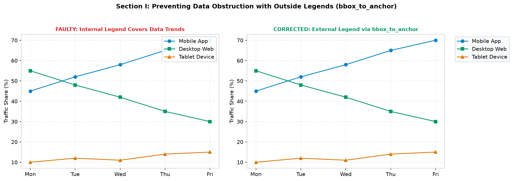
bbox_to_anchor=(1.05, 1) karke canvas ke bahar bhejte hain, toh standard plt.savefig() us legend ko crop (kaat) deta hai kyunki wo default canvas boundary ke bahar chala gaya hota hai!fig.savefig('plot.png', bbox_inches='tight')!
import matplotlib.pyplot as plt
fig, ax = plt.subplots(figsize=(8, 4.5))
days = ['Mon', 'Tue', 'Wed', 'Thu', 'Fri']
ax.plot(days, [45, 52, 58, 65, 70], marker='o', label='Mobile App', color='#0284c7')
ax.plot(days, [55, 48, 42, 35, 30], marker='s', label='Desktop Web', color='#059669')
ax.plot(days, [10, 12, 11, 14, 15], marker='^', label='Tablet Device', color='#d97706')
ax.set_title("Traffic Share by Client Platform", fontweight='bold')
ax.set_ylabel("Traffic Share (%)")
ax.grid(True, linestyle='--', alpha=0.4)
# Place legend cleanly outside to the right
ax.legend(bbox_to_anchor=(1.04, 1), loc="upper left", frameon=True, facecolor='#f8fafc', edgecolor='#cbd5e1')
# Ensure layout accommodates the outside legend
fig.tight_layout(pad=1.5)
fig.savefig("assets/traffic_share.png", dpi=150, bbox_inches='tight')
plt.show()Har subplot barabar size ka hona zaroori nahi hai! Dashboard design ka golden rule hai: "Most critical metric gets the biggest screen real estate." matplotlib.gridspec.GridSpec se aap rows aur columns ko asymmetrically span kar sakte hain.
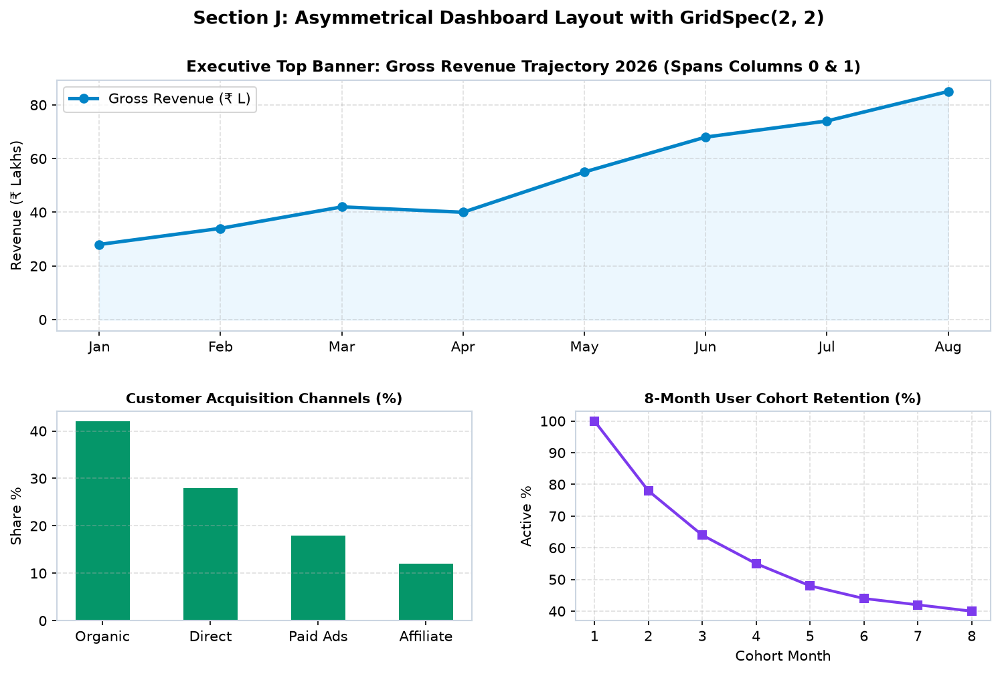
import matplotlib.pyplot as plt
import matplotlib.gridspec as gridspec
fig = plt.figure(figsize=(11, 6.5))
gs = gridspec.GridSpec(2, 2, figure=fig, height_ratios=[1.2, 1.0], hspace=0.35, wspace=0.25)
# Top Hero Chart (Spans both columns)
ax_hero = fig.add_subplot(gs[0, :])
months = ['Jan', 'Feb', 'Mar', 'Apr', 'May', 'Jun']
rev = [30, 42, 38, 55, 68, 80]
ax_hero.plot(months, rev, marker='o', color='#0284c7', lw=2.5)
ax_hero.fill_between(months, rev, color='#e0f2fe', alpha=0.5)
ax_hero.set_title("Executive Revenue Trajectory (Hero Banner)", fontweight='bold')
ax_hero.set_ylabel("Revenue (₹ Lakhs)")
ax_hero.grid(True, linestyle='--', alpha=0.4)
# Supporting Chart 1 (Bottom Left)
ax_sub1 = fig.add_subplot(gs[1, 0])
ax_sub1.bar(['Organic', 'Paid', 'Referral'], [50, 30, 20], color='#059669', width=0.5)
ax_sub1.set_title("Channel Distribution (%)", fontweight='bold')
ax_sub1.grid(True, linestyle='--', alpha=0.4, axis='y')
# Supporting Chart 2 (Bottom Right)
ax_sub2 = fig.add_subplot(gs[1, 1])
ax_sub2.plot(range(1, 7), [100, 80, 65, 55, 48, 45], marker='s', color='#7c3aed')
ax_sub2.set_title("User Retention Curve (%)", fontweight='bold')
ax_sub2.grid(True, linestyle='--', alpha=0.4)
fig.suptitle("E-Commerce Executive Operations Dashboard", fontsize=14, fontweight='bold', y=0.98)
plt.show()Ek standard frustration jo har student face karta hai: "Screen par toh mera plot poora dikh raha tha, lekin PNG save karne par right side ka legend aur oopar ka title kat gaya!"
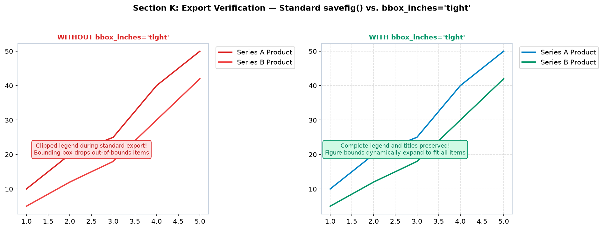
fig.savefig("dashboard.png", dpi=150, bbox_inches="tight", pad_inches=0.1)dpi=150: High-DPI mobile screens ke liye crisp typography deta hai.bbox_inches="tight": Sabhi outside legends aur suptitles ko capture karke bounding box expand karta hai.pad_inches=0.1: Image ke chaaro taraf thoda clean white margin deta hai.
import matplotlib.pyplot as plt
fig, ax = plt.subplots(figsize=(8, 4))
ax.plot([1, 2, 3], [10, 30, 20], label='Product Series A', color='#0284c7', lw=2)
ax.set_title("Verified Zero-Crop Export Demo", fontweight='bold')
# Outside legend
ax.legend(bbox_to_anchor=(1.02, 1), loc='upper left')
# Master title
fig.suptitle("Corporate Financial Analytics Report", fontsize=12, fontweight='bold')
# Safe production save
fig.savefig("assets/production_chart.png", dpi=150, bbox_inches="tight", pad_inches=0.15)
plt.close(fig)
print("Chart safely exported with zero cropping!")Subplot formatting mein aane wale 4 sabse common mistakes aur unka instant fix:
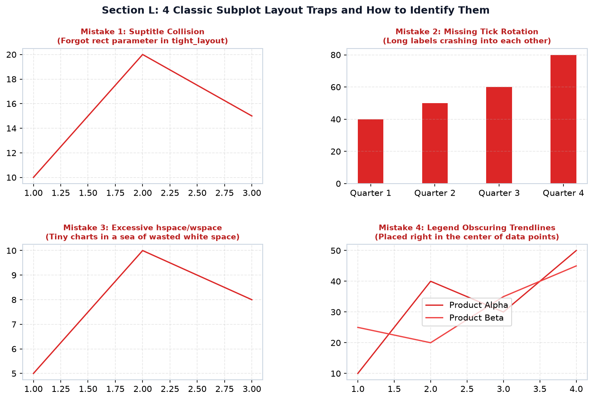
| Mistake / Trap | Kyun Hota Hai? (Root Cause) | Instant Production Fix |
|---|---|---|
| Suptitle Collision | tight_layout() suptitle artist ko measure nahi karta. |
Pass rect=[0, 0, 1, 0.92] ya constrained_layout=True use karein. |
| Tick Labels Crash | Long strings horizontal space mein fit nahi hote. | ax.tick_params(axis='x', rotation=25) + tick.set_ha('right'). |
| Excessive Empty Space | Manual wspace=0.8 ya hspace=0.8 de diya gaya. |
Use balanced wspace=0.30 aur hspace=0.35. |
| Data Obscuration | ax.legend(loc='center') data trend ke upar baith gaya. |
Use bbox_to_anchor=(1.02, 1) ya loc='upper left' with transparency. |
Scenario: 5 semester engineering subjects (DSA, DBMS, OS, CN, AI) ka 4-panel comprehensive dashboard taiyar karein: examination marks, lecture attendance, study dedication correlation, aur overall cohort score spread.
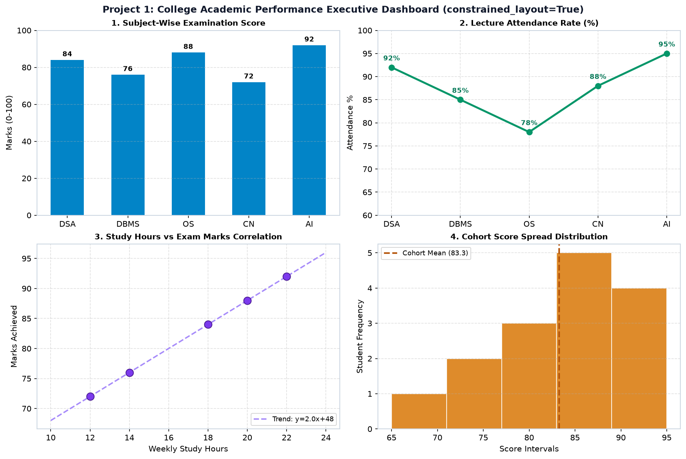
import matplotlib.pyplot as plt
import numpy as np
# 2x2 grid configured with constrained_layout=True
fig, axes = plt.subplots(2, 2, figsize=(12, 8), dpi=150, constrained_layout=True)
subjects = ['DSA', 'DBMS', 'OS', 'CN', 'AI']
marks = [84, 76, 88, 72, 92]
attendance = [92, 85, 78, 88, 95]
hours = [18, 14, 20, 12, 22]
# 1. Subject Marks Bar Chart
axes[0, 0].bar(subjects, marks, color='#0284c7', width=0.55)
axes[0, 0].set_title("1. Subject-Wise Examination Score", fontweight='bold')
axes[0, 0].set_ylabel("Marks (0-100)")
axes[0, 0].set_ylim(0, 100)
axes[0, 0].grid(True, linestyle='--', alpha=0.4, axis='y')
for i, v in enumerate(marks):
axes[0, 0].text(i, v + 2, f"{v}", ha='center', fontweight='bold', fontsize=8.5)
# 2. Lecture Attendance Line Chart
axes[0, 1].plot(subjects, attendance, marker='o', color='#059669', lw=2.5, markersize=7)
axes[0, 1].set_title("2. Lecture Attendance Rate (%)", fontweight='bold')
axes[0, 1].set_ylabel("Attendance %")
axes[0, 1].set_ylim(60, 100)
axes[0, 1].grid(True, linestyle='--', alpha=0.4)
# 3. Study Hours vs Exam Marks Correlation
axes[1, 0].scatter(hours, marks, color='#7c3aed', s=90, edgecolors='#4c1d95', zorder=4)
z = np.polyfit(hours, marks, 1)
p = np.poly1d(z)
axes[1, 0].plot(np.linspace(10, 24, 50), p(np.linspace(10, 24, 50)), '--', color='#a78bfa', label=f"Trend: y={z[0]:.1f}x+{z[1]:.0f}")
axes[1, 0].set_title("3. Study Hours vs Marks Correlation", fontweight='bold')
axes[1, 0].set_xlabel("Weekly Study Hours")
axes[1, 0].set_ylabel("Marks Achieved")
axes[1, 0].grid(True, linestyle='--', alpha=0.4)
axes[1, 0].legend(loc='lower right', fontsize=8.5)
# 4. Cohort Score Spread Distribution
cohort = [65, 72, 75, 78, 80, 82, 84, 85, 85, 87, 88, 90, 91, 92, 95]
axes[1, 1].hist(cohort, bins=5, color='#d97706', edgecolor='white', alpha=0.85)
axes[1, 1].axvline(np.mean(cohort), color='#b45309', linestyle='--', lw=2, label=f"Mean ({np.mean(cohort):.1f})")
axes[1, 1].set_title("4. Cohort Score Spread Distribution", fontweight='bold')
axes[1, 1].set_xlabel("Score Intervals")
axes[1, 1].set_ylabel("Student Frequency")
axes[1, 1].grid(True, linestyle='--', alpha=0.4, axis='y')
axes[1, 1].legend(loc='upper left', fontsize=8.5)
fig.suptitle("Project 1: College Academic Performance Executive Dashboard", fontsize=13, fontweight='bold')
plt.show()Scenario: E-commerce leadership ke liye monthly revenue, order volume, category volume ranking, aur average order value (AOV) ka 2x2 executive matrix build karein.
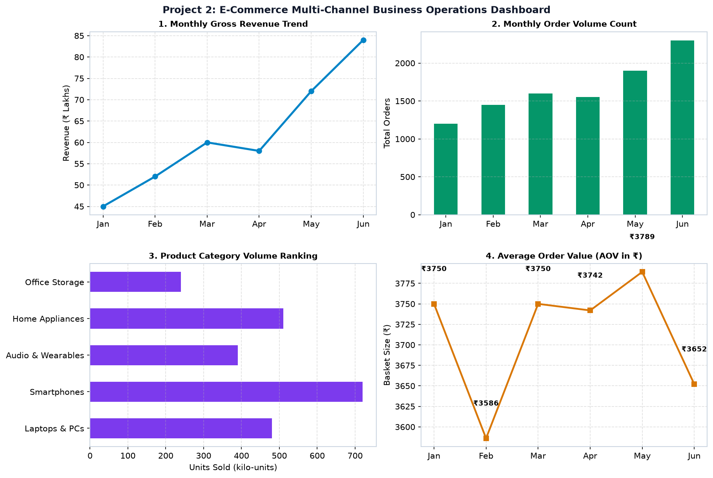
import matplotlib.pyplot as plt
fig, axes = plt.subplots(2, 2, figsize=(12, 8), dpi=150, constrained_layout=True)
months = ['Jan', 'Feb', 'Mar', 'Apr', 'May', 'Jun']
rev = [45, 52, 60, 58, 72, 84]
orders = [1200, 1450, 1600, 1550, 1900, 2300]
categories = ['Laptops', 'Phones', 'Audio', 'Appliances', 'Storage']
sales_vol = [480, 720, 390, 510, 240]
axes[0, 0].plot(months, rev, marker='o', color='#0284c7', lw=2.5)
axes[0, 0].set_title("1. Monthly Gross Revenue (₹ Lakhs)", fontweight='bold')
axes[0, 0].grid(True, linestyle='--', alpha=0.4)
axes[0, 1].bar(months, orders, color='#059669', width=0.5)
axes[0, 1].set_title("2. Monthly Order Volume Count", fontweight='bold')
axes[0, 1].grid(True, linestyle='--', alpha=0.4, axis='y')
axes[1, 0].barh(categories, sales_vol, color='#7c3aed', height=0.55)
axes[1, 0].set_title("3. Product Category Volume Ranking", fontweight='bold')
axes[1, 0].grid(True, linestyle='--', alpha=0.4, axis='x')
aov = [round(r * 100000 / o) for r, o in zip(rev, orders)]
axes[1, 1].plot(months, aov, marker='s', color='#d97706', lw=2.2)
axes[1, 1].set_title("4. Average Order Value (AOV in ₹)", fontweight='bold')
axes[1, 1].grid(True, linestyle='--', alpha=0.4)
fig.suptitle("Project 2: E-Commerce Multi-Channel Business Operations Dashboard", fontsize=13, fontweight='bold')
plt.show()Scenario: Environmental testing chamber ke liye telemetry dashboard banayein jisme top banner par Temperature & Humidity ka dual Y-axis synchronised view ho, bottom-left par sensor redundancy parity scatter plot ho, aur bottom-right par thermal stability distribution ho.
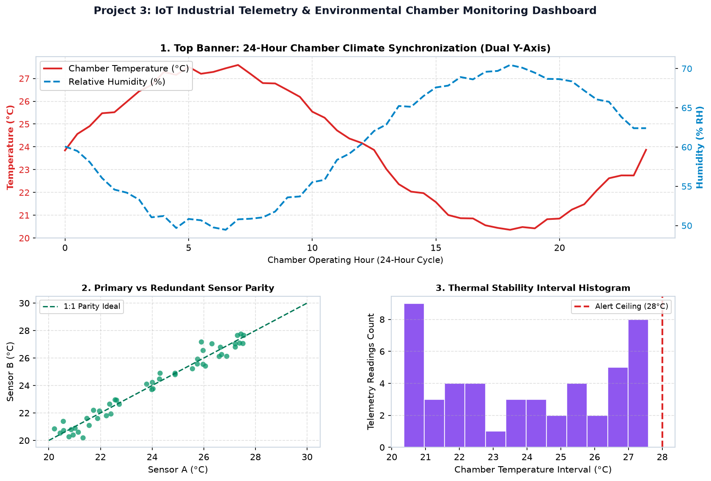
import matplotlib.pyplot as plt
import matplotlib.gridspec as gridspec
import numpy as np
fig = plt.figure(figsize=(13, 8), dpi=150)
gs = gridspec.GridSpec(2, 2, figure=fig, height_ratios=[1.2, 1.0], hspace=0.35, wspace=0.25)
hours = np.arange(0, 24, 0.5)
temp = 24.0 + 3.5 * np.sin(np.pi * hours / 12) + np.random.normal(0, 0.1, len(hours))
humidity = 60.0 - 10.0 * np.sin(np.pi * hours / 12) + np.random.normal(0, 0.3, len(hours))
# Top Banner: Dual Y-axis
ax_top = fig.add_subplot(gs[0, :])
l1 = ax_top.plot(hours, temp, color='#dc2626', lw=2, label='Chamber Temp (°C)')
ax_top.set_ylabel("Temperature (°C)", color='#dc2626', fontweight='bold')
ax_top.tick_params(axis='y', labelcolor='#dc2626')
ax_top.grid(True, linestyle='--', alpha=0.4)
ax_hum = ax_top.twinx()
l2 = ax_hum.plot(hours, humidity, color='#0284c7', lw=2, linestyle='--', label='Humidity (%)')
ax_hum.set_ylabel("Humidity (% RH)", color='#0284c7', fontweight='bold')
ax_hum.tick_params(axis='y', labelcolor='#0284c7')
lines = l1 + l2
labels = [l.get_label() for l in lines]
ax_top.legend(lines, labels, loc='upper left')
ax_top.set_title("1. Top Banner: 24-Hour Chamber Climate Synchronization", fontweight='bold')
# Bottom Left: Parity Scatter
ax_b1 = fig.add_subplot(gs[1, 0])
ax_b1.scatter(temp, temp + np.random.normal(0, 0.2, len(temp)), color='#059669', s=35)
ax_b1.plot([20, 30], [20, 30], '--', color='#047857', label='1:1 Parity')
ax_b1.set_title("2. Primary vs Redundant Sensor Parity", fontweight='bold')
ax_b1.grid(True, linestyle='--', alpha=0.4)
ax_b1.legend(loc='upper left')
# Bottom Right: Histogram
ax_b2 = fig.add_subplot(gs[1, 1])
ax_b2.hist(temp, bins=12, color='#7c3aed', edgecolor='white')
ax_b2.axvline(28.0, color='#dc2626', linestyle='--', lw=2, label='Alert Ceiling (28°C)')
ax_b2.set_title("3. Thermal Stability Histogram", fontweight='bold')
ax_b2.grid(True, linestyle='--', alpha=0.4, axis='y')
ax_b2.legend(loc='upper right')
fig.suptitle("Project 3: IoT Industrial Telemetry & Environmental Monitoring", fontsize=12, fontweight='bold', y=0.98)
fig.savefig("assets/project3_iot.png", dpi=150, bbox_inches='tight')
plt.show()| Command / Parameter | Primary Purpose | Code Snippet |
|---|---|---|
constrained_layout=True |
Modern automated layout optimization at figure initialization | plt.subplots(2, 2, constrained_layout=True) |
fig.tight_layout(pad=2.0) |
Post-processing automatic margin calculations | fig.tight_layout(pad=2.0) |
rect=[0, 0, 1, 0.92] |
Reserves top canvas space for global suptitle | fig.tight_layout(rect=[0, 0, 1, 0.92]) |
fig.subplots_adjust() |
Manual surgical control over left, right, top, bottom, wspace, hspace | fig.subplots_adjust(wspace=0.35, hspace=0.45) |
bbox_to_anchor=(1.04, 1) |
Anchors legend outside plotting area | ax.legend(bbox_to_anchor=(1.04, 1), loc='upper left') |
bbox_inches="tight" |
Exports complete figure without cropping outside artists | fig.savefig('plot.png', dpi=150, bbox_inches='tight') |
figsize=(8, 6) ki unit kya hoti hai?figsize=(10, 5) aur dpi=150 hai, toh saved image ka pixel resolution kya hoga?tight_layout() ko batata hai ki top suptitle ke liye space reserve karo?top_marginrect=[0, 0, 1, 0.92]reserve=Truewspace=0.5tight_layout()subplots_adjust()constrained_layout=Trueauto_margin=Truesubplots_adjust(wspace=0.4) mein wspace ka kya matlab hai?transparent=Truedpi=300bbox_inches='tight'format='svg'constrained_layout=True aur fig.tight_layout() dono ek sath use karne chahiye?matplotlib.pyplot.boxmatplotlib.gridspec.GridSpecmatplotlib.canvas.sizematplotlib.shape.Rectfig.subplots_adjust(left=0.15, right=0.85) mein 0.15 aur 0.85 kya represent karte hain?wspace=0.35 set karein.fig, (ax1, ax2, ax3) = plt.subplots(1, 3, figsize=(14, 4)) followed by fig.subplots_adjust(wspace=0.35).
bbox_to_anchor=(1.04, 1) par ho aur figure bbox_inches='tight' ke sath save ho.ax.legend(bbox_to_anchor=(1.04, 1), loc='upper left') and fig.savefig("retention.png", bbox_inches='tight').
gs[0, :]) aur row 1 par 3 individual supporting charts hon.gs = gridspec.GridSpec(2, 3, height_ratios=[1.3, 1.0]).
ax.tick_params(axis='x', rotation=30) + loop with tick.set_ha('right') + fig.tight_layout(pad=2.0).
ax.twinx() use karke Temperature aur Pressure plot karein aur dono curves ka ek single consolidated legend top-left mein display karein.lines = line1 + line2; labels = [l.get_label() for l in lines]; ax.legend(lines, labels).